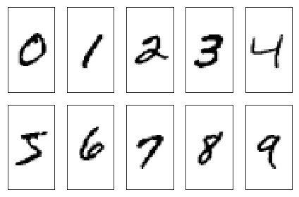
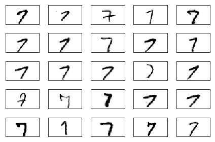
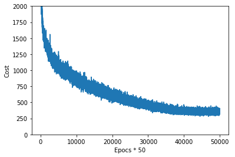
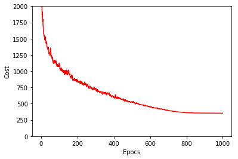
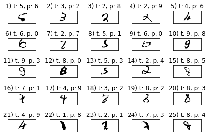

ニューラルネットワーク - 画像認識トレーニング¶
12.1 人工ニューラルネットワークによる複雑な関数のモデリング¶
12.1.1 単層ニューラルネットワークのまとめ¶
ADALINE
- 学習率: \(\eta\)
- コスト関数: \(J(\boldsymbol{w})\)
- 勾配降下法による重みベクトル \(\boldsymbol{w} := \boldsymbol{w} + \Delta{\boldsymbol{w}}, \Delta\boldsymbol{w} = -\eta{\nabla}J(\boldsymbol{w})\)
- \(x^{(i)}\) のクラスラベル: \(y^{(i)}\)
- ニューロンの活性 (activation): \(a^{(i)}\)
- 重み \(w_j\) ごとの偏微分係数: \(\frac{\partial}{\partial{w_j}}J(\boldsymbol{w}) = -\sum_i(y^{(i)} - a^{(i)})x^{(i)}_j\)
- 総入力: \(z = \sum_j{w_j}{x_j}=\boldsymbol{w}^T\boldsymbol{x}\)
12.1.2 多層ニューラルネットワークアーキテクチャ¶
- 多層フィードフォワードニューラルネットワーク (multi-layer feedforward neural network)
- 多層パーセプトロン (multi-layer perceptron: MLP)
- \(l\) 層 \(i\) 番目の活性化ユニット: \(a_i^{(l)}\)
- \(a_k^{(l)}\) と \(a_j^{(l+1)}\) の重み係数: \(w_{j,k}^{(l)}\)
- \(1\) 層目と \(2\) 層目の重み係数の行列: \(\boldsymbol{W}^{(1)} \in \mathbb{R}^{h \times (m + 1)}\) ただし \(h\) は \(2\) 層目のユニット数, \(m + 1\) は \(1\) 層目のユニット数 \(m\) とバイアスユニット \(1\)
12.1.3 フォワードプロパゲーションによるニューラルネットワークの活性化¶
- 総入力: \(z_j^{(l+1)} = {\sum^m_{k=0}}a_k^{(l)}w_{j,k}^{(l)}\)
- \(a_j^{(l+1)} = \phi\left(z_j^{(l+1)}\right)\)
ベクトルで表現する:
- \(\boldsymbol{a}^{(l)} \in \mathbb{R}^{(m + 1) \times 1}\)
- \(\boldsymbol{z}^{(l + 1)} = \boldsymbol{W}^{(l)}\boldsymbol{a}^{(l)} \in \mathbb{R}^{h \times 1}\)
- \(\boldsymbol{a}^{(l + 1)} = \phi\left(\boldsymbol{z}^{(l + 1)}\right)\)
\(n\) 個のサンプルについて、行列で表現する:
- サンプル数: \(n\)
- \(\boldsymbol{A}^{(l)} \in \mathbb{R}^{n \times (m + 1)}\)
- \(\boldsymbol{Z}^{(l + 1)} = \boldsymbol{W}^{(l)}\left[\boldsymbol{A}^{(l)}\right]^T \in \mathbb{R}^{h \times n}\)
- \(\boldsymbol{A}^{(l + 1)} = \phi\left(\boldsymbol{Z}^{(l + 1)}\right)\)
12.2 手書きの数字を分類する¶
12.2.1 MNIST データセットを取得する¶
- MNIST データセット、手書きの数字で構成されたデータセット
In [1]:
import os
import struct
import numpy
def load_mnist(path, kind='train'):
# (str, str) -> Tuple[numpy.array[uint8], numpy.array[uint8]]
labels_path = os.path.join(path, '%s-labels-idx1-ubyte' % kind)
images_path = os.path.join(path, '%s-images-idx3-ubyte' % kind)
with open(labels_path, 'rb') as lbpath:
magic, n = struct.unpack('>II', lbpath.read(8))
labels = numpy.fromfile(lbpath, dtype=numpy.uint8)
with open(images_path, 'rb') as imgpath:
magic, num, rows, cols = struct.unpack('>IIII', imgpath.read(16))
images = numpy.fromfile(
imgpath,
dtype=numpy.uint8
).reshape(
len(labels), # rows: n samples
784 # columns: m (28 * 28) features
)
return images, labels
In [2]:
X_train, y_train = load_mnist('mnist', kind='train')
'Rows: %d, columns: %d' % (X_train.shape[0], X_train.shape[1])
Out[2]:
'Rows: 60000, columns: 784'
In [3]:
X_test, y_test = load_mnist('mnist', kind='t10k')
'Rows: %d, columns: %d' % (X_test.shape[0], X_test.shape[1])
Out[3]:
'Rows: 10000, columns: 784'
In [4]:
from matplotlib import pyplot
fig, ax = pyplot.subplots(nrows=2, ncols=5, sharex=True, sharey=True)
ax = ax.flatten()
for i in range(10):
img = X_train[y_train==i][0].reshape(28, 28)
ax[i].imshow(img, cmap='Greys', interpolation='nearest')
ax[0].set_xticks([])
ax[0].set_yticks([])
pyplot.tight_layout()
pyplot.show()

In [5]:
fig, ax = pyplot.subplots(nrows=5, ncols=5, sharex=True, sharey=True)
ax = ax.flatten()
for i in range(25):
img = X_train[y_train==7][i].reshape(28, 28)
ax[i].imshow(img, cmap='Greys', interpolation='nearest')
ax[0].set_xticks([])
ax[0].set_yticks([])
pyplot.tight_layout()
pyplot.show()

In [6]:
import sys
import numpy
from scipy.special import expit
class NeuralNetMLP:
def __init__(
self,
n_output,
n_features,
n_hidden=30,
l1=0.0,
l2=0.0,
epochs=500,
eta=0.001,
alpha=0.0,
decrease_const=0.0,
shuffle=True,
minibatches=1,
random_state=None,
):
numpy.random.seed(random_state)
self.n_output = n_output
self.n_features = n_features
self.n_hidden = n_hidden
self.w1, self.w2 = self._initialize_weights()
self.l1 = l1
self.l2 = l2
self.epochs = epochs
self.eta = eta
self.alpha = alpha
self.decrease_const = decrease_const
self.shuffle = shuffle
self.minibatches = minibatches
def _encode_labels(self, y, k):
""" encode labels """
onehot = numpy.zeros((k, y.shape[0]))
for idx, val in enumerate(y):
onehot[val, idx] = 1.0
return onehot
def _initialize_weights(self):
# () -> Tuple[numpy.ndarray, numpy.ndarray]
""" make initial weights """
w1 = numpy.random.uniform(
low=-1.0,
high=1.0,
size=self.n_hidden * (self.n_features + 1)
).reshape(
self.n_hidden,
self.n_features + 1
)
w2 = numpy.random.uniform(
low=-1.0,
high=1.0,
size=self.n_output * (self.n_hidden + 1)
).reshape(
self.n_output,
self.n_hidden + 1
)
return w1, w2
def _sigmoid(self, z):
# float -> float
""" sigmoid function """
return expit(z)
def _sigmoid_gradient(self, z):
# float -> float
""" gradient of sigmoid function"""
sg = self._sigmoid(z)
return sg * (1 - sg)
def _add_bias_unit(self, X, how='column'):
# (numpy.ndarray, str) -> numpy.ndarray
if how == 'column':
X_new = numpy.ones((
X.shape[0],
X.shape[1] + 1,
))
X_new[:, 1:] = X
elif how == 'row':
X_new = numpy.ones((
X.shape[0] + 1,
X.shape[1],
))
X_new[1:, :] = X
else:
raise ValueError("how mube 'column' or 'row'")
return X_new
def _feedforward(self, X, w1, w2):
a1 = self._add_bias_unit(X, how='column')
z2 = w1.dot(a1.T)
a2 = self._sigmoid(z2)
a2 = self._add_bias_unit(a2, how='row')
z3 = w2.dot(a2)
a3 = self._sigmoid(z3)
return a1, z2, a2, z3, a3
def _L2_reg(self, lambda_, w1, w2):
return (
lambda_ / 2.0
) * (
numpy.sum(w1[:, 1:] ** 2) + numpy.sum(w2[:, 1:] ** 2)
)
def _L1_reg(self, lambda_, w1, w2):
return (
lambda_ / 2.0
) * (
numpy.abs(w1[:, 1:] ** 2).sum() + numpy.abs(w2[:, 1:] ** 2).sum()
)
def _get_cost(self, y_enc, output, w1, w2):
term1 = -1 * y_enc * numpy.log(output)
term2 = (1 - y_enc) * numpy.log(1 - output)
L1_term = self._L1_reg(self.l1, w1, w2)
L2_term = self._L2_reg(self.l2, w1, w2)
return numpy.sum(term1 - term2) + L1_term + L2_term
def _get_gradient(
self,
a1, a2, a3, z2, y_enc, w1, w2,
):
sigma3 = a3 - y_enc
z2 = self._add_bias_unit(z2, how='row')
sigma2 = w2.T.dot(sigma3) * self._sigmoid_gradient(z2)
sigma2 = sigma2[1:, :]
grad1 = sigma2.dot(a1)
grad2 = sigma3.dot(a2.T)
grad1[:, 1:] += (w1[:, 1:] * (self.l1 + self.l2))
grad2[:, 1:] += (w2[:, 1:] * (self.l1 + self.l2))
return grad1, grad2
def predict(self, X):
a1, z2, a2, z3, a3 = self._feedforward(
X, self.w1, self.w2,
)
return numpy.argmax(z3, axis=0)
def fit(self, X, y, print_progress=False):
self.cost_ = []
X_data, y_data = X.copy(), y.copy()
y_enc = self._encode_labels(y, self.n_output)
delta_w1_prev = numpy.zeros(self.w1.shape)
delta_w2_prev = numpy.zeros(self.w2.shape)
for i in range(self.epochs):
self.eta /= (1 + self.decrease_const * i)
if print_progress:
sys.stderr.write('\rEpoch: %d/%d' % (i + 1, self.epochs))
sys.stderr.flush()
if self.shuffle:
idx = numpy.random.permutation(y_data.shape[0])
X_data, y_enc = X_data[idx], y_enc[:, idx]
mini = numpy.array_split(
range(y_data.shape[0]),
self.minibatches,
)
for idx in mini:
a1, z2, a2, z3, a3 = self._feedforward(
X_data[idx],
self.w1,
self.w2,
)
cost = self._get_cost(
y_enc=y_enc[:, idx],
output=a3,
w1=self.w1,
w2=self.w2,
)
self.cost_.append(cost)
grad1, grad2 = self._get_gradient(
a1=a1,
a2=a2,
a3=a3,
z2=z2,
y_enc=y_enc[:, idx],
w1=self.w1,
w2=self.w2,
)
delta_w1 = self.eta * grad1
delta_w2 = self.eta * grad2
self.w1 -= (delta_w1 + (self.alpha * delta_w1_prev))
self.w2 -= (delta_w2 + (self.alpha * delta_w2_prev))
delta_w1_prev, delta_w2_prev = delta_w1, delta_w2
return self
In [7]:
nn = NeuralNetMLP(
n_output=10,
n_features=X_train.shape[1],
n_hidden=50,
l2=0.1,
l1=0.0,
epochs=1000,
eta=0.001,
alpha=0.001,
decrease_const=0.00001,
shuffle=True,
minibatches=50,
random_state=1
)
In [8]:
nn.fit(X_train, y_train, print_progress=True)
Epoch: 1000/1000
Out[8]:
<__main__.NeuralNetMLP at 0x7f91eac22ef0>
In [9]:
pyplot.plot(range(len(nn.cost_)), nn.cost_)
pyplot.ylim([0, 2000])
pyplot.ylabel('Cost')
pyplot.xlabel('Epocs * 50')
pyplot.show()

In [10]:
batches = numpy.array_split(range(len(nn.cost_)), nn.epochs)
cost_ary = numpy.array(nn.cost_)
cost_avgs = [numpy.mean(cost_ary[i]) for i in batches]
pyplot.plot(range(len(cost_avgs)), cost_avgs, color='red')
pyplot.ylim([0, 2000])
pyplot.ylabel('Cost')
pyplot.xlabel('Epocs')
pyplot.show()

In [11]:
y_train_pred = nn.predict(X_train)
acc = numpy.sum(y_train == y_train_pred, axis=0) / X_train.shape[0]
'Training accuracy: %.2f%%' % (acc * 100)
Out[11]:
'Training accuracy: 97.75%'
In [12]:
y_test_pred = nn.predict(X_test)
acc = numpy.sum(y_test == y_test_pred, axis=0) / X_test.shape[0]
'Test accuracy: %.2f%%' % (acc * 100)
Out[12]:
'Test accuracy: 95.87%'
In [13]:
miscl_img = X_test[y_test != y_test_pred][:25]
correct_label = y_test[y_test != y_test_pred][:25]
miscl_label = y_test_pred[y_test != y_test_pred][:25]
fig, ax = pyplot.subplots(nrows=5, ncols=5, sharex=True, sharey=True)
ax = ax.flatten()
for i in range(25):
img = miscl_img[i].reshape(28, 28)
ax[i].imshow(img, cmap='Greys', interpolation='nearest')
ax[i].set_title('%d) t: %d, p: %d' % (i + 1, correct_label[i], miscl_label[i]))
ax[0].set_xticks([])
ax[0].set_yticks([])
pyplot.tight_layout()
pyplot.show()
